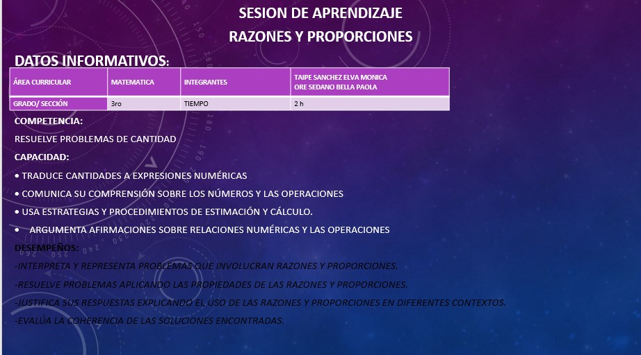
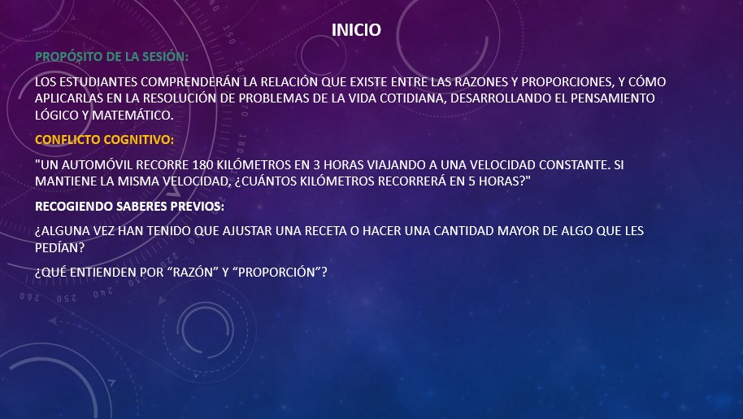
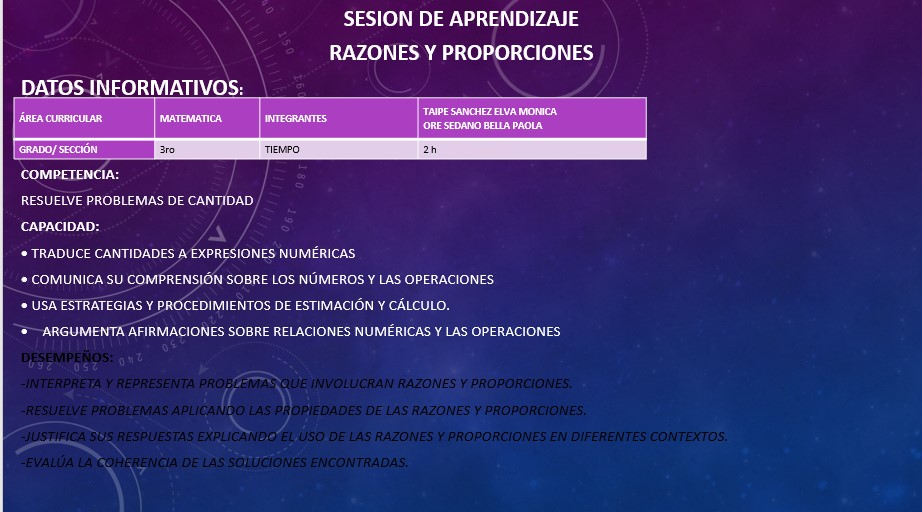
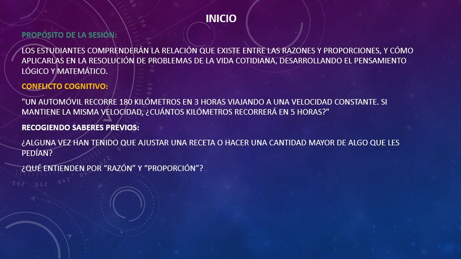
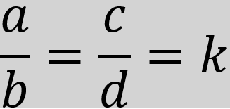
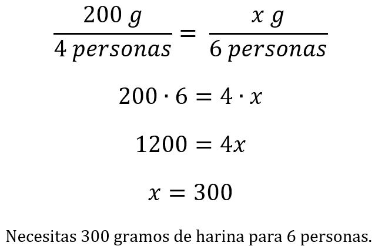
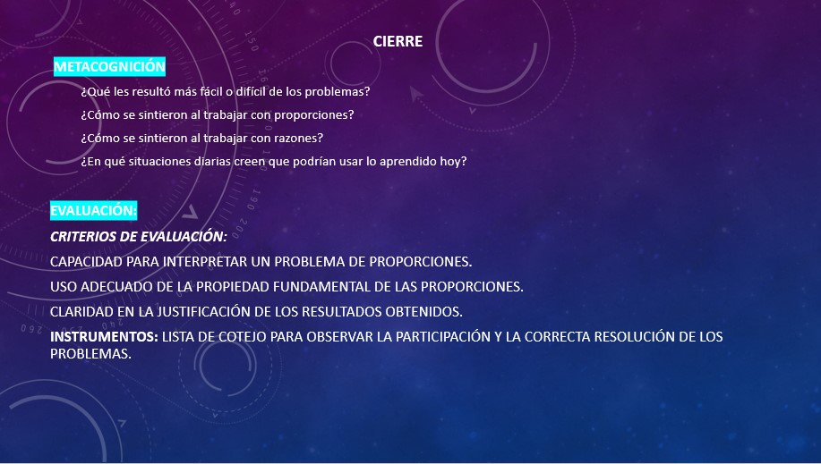

Razones y Proporciones




Una razón es la comparación entre dos cantidades mediante una división.
Es una forma de mostrar cuántas veces un número contiene a otro.
Si en un salón hay 8 chicas y 4 chicos, la razón de chicas a chicos es , es decir, por cada 2 chicas hay 1 chico.
Como una fracción:
Con los dos puntos: a:b
En palabras: “a es a b”

Una proporción es una igualdad entre dos razones.
Es una forma de expresar que dos relaciones son equivalentes o están en equilibrio.
Una proporción se escribe en forma de igualdad de dos razones:

k: Constante de proporcionalidad
a, d : Se denominan extremos de la proporción.
b, c : Se denominan medios de la proporción.
Como una fracción:
Con los dos puntos: a:b = c:d
En palabras: “a es a b como c es a d”
Proporción Directa:
Se da cuando ambas cantidades aumentan o disminuyen en la misma proporción.
Ejemplo: Si compras más metros de tela, pagas más dinero (más metros → más dinero).
Proporción Inversa:
Se da cuando una cantidad aumenta mientras la otra disminuye en la misma proporción.
Ejemplo: Si aumentas la velocidad de un vehículo, el tiempo necesario para recorrer una distancia disminuye (más velocidad → menos tiempo).
Si en una receta necesitas 200 g de harina para 4 personas, pero quieres hacer la receta para 6 personas, puedes usar una proporción para calcular cuánta harina necesitas:

\sqrt{144}
...
\sqrt{144}
...
\sqrt{144}
...
Resuelve el siguiente ejercicio de proporciones. La puntuación máxima es de 10 puntos.
Lee con atención, para completar cada tarea y revisa tus respuestas antes de finalizar
Resuelve el siguiente ejercicio de razones. La puntuación máxima es de 10 puntos.
Lee con atención, para completar cada tarea y revisa tus respuestas antes de finalizar

Obra publicada con Licencia Creative Commons Reconocimiento Compartir igual 4.0